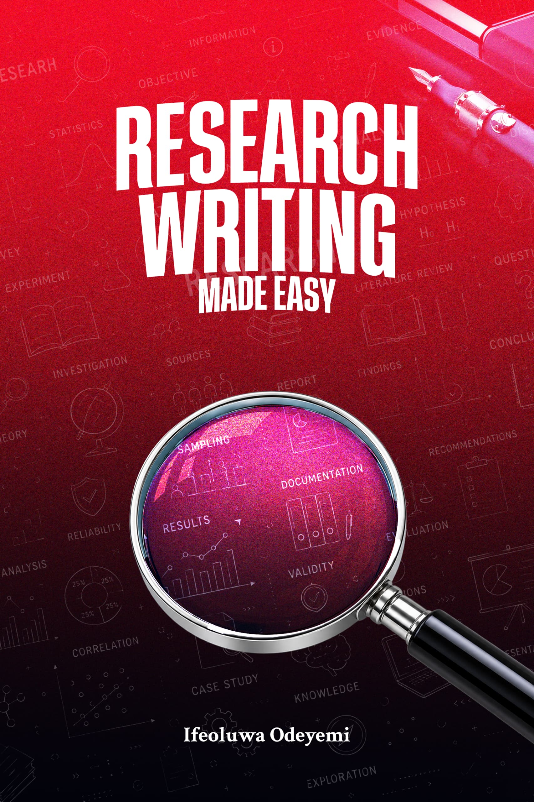

Guidance for Every Stage of Your Research Journey
ReseArc is a research mentoring community for students, researchers, and anyone trying to make sense of the beautiful chaos called research writing.
About ReseArc
Research, but with people in your corner.
ReseArc is a research mentoring community for students, researchers, and anyone trying to make sense of the beautiful chaos called research writing.
Here, we break things down, ask questions, share ideas, review work, learn from mistakes, and figure things out together. From choosing a topic, to writing methodology, analysing data, referencing sources, and surviving projects, you don't have to figure it all out alone.
Just practical guidance, honest conversations, useful resources, and a community that helps you become a better researcher.
Mentorship
Free access to ReseArc, research mentorship community for readers, for one full year with every book purchase.
Publications
Practical books and guides — starting with Research Writing Made Easy — written in simple and curated language.
Methodology Workshops
Hands-on sessions covering research design, data handling, and academic tools with mild visual elements to aid practice.
Our Publications

Research Writing Made Easy
By Ifeoluwa Odeyemi
Key Benefits & Structure
11 practice-packed and conversation-oriented modules comprising:
- Why?
- The Concept of Research
- Basic Skills for Research
- Data (Types and Sources)
- Referencing
- Research Writing Tools
- Making Sense of A Thesis
- Simple and curated language for effortless understanding.
- Mild visual elements designed to aid practice.
- Free 1-Year Access to ReseArc, research mentorship community for readers.
Ifeoluwa Odeyemi
Convener & Author
ABOUT THE CONVENER
Ifeoluwa Odeyemi is a child of God driven by God-given purpose and purity, with a desire for greatness and impact that can't be quenched. He is an astute academic writer, educator, public speaker and early-career researcher with extensive experience working on research projects, journal manuscripts, literature reviews, and policy-focused studies.
Ifeoluwa's work has also involved mentoring students through the practical aspects of research writing, with Building Research Skills Early being his foremost intervention. His strongest professional interests span across research and civil society, educational inclusion, as well as governance and human capital development. He also has a penchant for managing human and material resources, projects, and events.
Ifeoluwa is currently the Convener of ReseArc, a research mentorship community for undergraduate students across Nigeria. ReseArc currently runs a number of flagship initiatives, including the Research Instinct, a live webinar focusing on developing the grit of research, and Research from Day One Initiative, a partnership with student associations across Nigeria for the training of their freshmen in research writing. By privilege, he is the author of Research Writing Made Easy.
Author’s Credibility Trace
Honors & Awards
- 3x Winner, Research and Academic Excellence Award | Obafemi Awolowo University (2023, 2024, 2025)
- Overall Best Graduating Student | Department of Political Science, Obafemi Awolowo University (2024)
Co-Authored Publications
- Agbalajobi, D. T., Adewole, M. T. & Odeyemi, I. E. (2025). Impact of social media on political participation among women in Ile-Ife community. In Mokoena, D. A. & Omotoso S. A. (Eds). Gender and feminist meditations on women’s political participation. University of Johannesburg Press. https://doi.org/10.64449/9780639890142
- Agbalajobi, D. T. & Odeyemi, I. E. State adaptation in counterinsurgency: Colombia’s experience with FARC and the limits of transferability to Nigeria. In Myam, J. G. & Mimiko N. O. (Eds) (2026). Global Trends in Defeating Complex Insurgencies. Nigerian Army Resource Centre, Abuja.
Conference Presentations
- Adekanye, A. O. & Odeyemi, I. E. (2025). Corruption as a gendered weapon: Analysing the impacts of political and cultural narratives in the feminisation of corruption in Nigeria. Lagos Studies Association (LSA) Conference, 2025.
- Adekanye, A. O. & Odeyemi, I. E. (2025). Unequal by design: Colonial structures, gendered labour and the case for feminist economic solidarity. International Association of Feminist Economics Conference, 2025.
- Odeyemi, I. E., Adekanye, A. O & Agbalajobi, D. T. (2025). Beyond ‘Big Brother’: Nigeria, the Sahel, and the politics of sacrifice in the ECOWAS. Conflict Research Network (CORN) West Africa Conference, 2025.
- Odeyemi, I. E. Teaching democracy otherwise: Indigenous governance and civic education in Nigeria’s basic education. Annual International Conference of the Africa Indigenous Knowledge Research Network (AIKRN), 2026.
Perspectives from professors, lecturers, and researchers on Research Writing Made Easy.
"I am not surprised at this but intrigued by the writing style - more like story telling- which makes readers stay glued and engaged as they read. I appreciate the simplicity and the cross-discipline perspective brought to the work."
D. T. Agbalajobi
Professor of Political Science,
Obafemi Awolowo University
"This is nothing but sheer brilliance."
Azeezat Adekanye
Independent Researcher
"Undergraduates should find this manual useful."
Dr Kingsley D. Ogunne
Lecturer, Department of Political Science,
University of Ibadan
"Research Writing Made Easy is a practical resource that I believe many students will find genuinely useful, particularly those who know the theory of research but struggle when it is time to sit down and do it. The conversational style and personal experiences also make the book relatable, and I found the emphasis on building practical competence rather than simply teaching students what research terms mean particularly valuable."
Bello, A.
Lecturer, Department of Anatomy,
Olabisi Onabanjo University
"This is a practical, engaging and highly accessible guide that simplifies research and academic writing while equipping students and early-stage researchers with the confidence and skills to conduct better research."
Grace Yesufu
Lecturer, Department of Economics,
Obafemi Awolowo University
"I find that the work is reminiscent of its title. Ifeoluwa has been able to break down the elitist gates that so often guard research writing and has made it possible for a well-intentioned dabbler into the craft to find their way with relative ease. I believe this is the defining trait of the work: its achievement of a steady balance between presenting complex ideas and keeping that presentation simple and approachable."
Grillo Adedolapo
Obafemi Awolowo University
"As against the usual fear and challenges students face with research writing, this book breaks the process down into simple, practical, and easy-to-understand steps, making it accessible to anyone. The author's personal experiences and insights make the book engaging, relatable, and refreshing. It demystifies research writing and shows that it can be approached with confidence rather than viewed as a complex task.
This is undoubtedly one of the most practical and accessible books I have read on research writing."
Precious Olufemi
Obafemi Awolowo University
ReseArc Telegram Mentorship Community
Get 1 full year of direct mentorship, research support, and ongoing guidance from Ifeoluwa Odeyemi. Community access is granted automatically with your purchase of Research Writing Made Easy.
Order Book to Join
Reader Comments & Feedback
Have a question or feedback about the book or ReseArc? Join the discussion below.